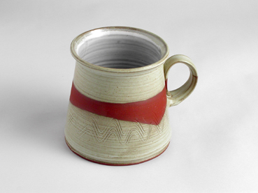
60.Tasse - konisch
Sortiment
Handgeformte Tassen für den Alltag und als beliebtes Geschenk.

60.Tasse - konisch
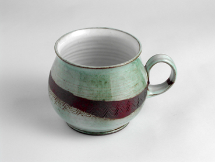
60.Tasse - bauchfoermig
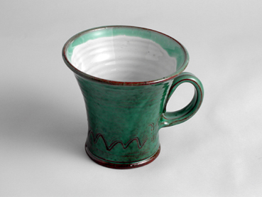
60.Tasse - trichterfoermig
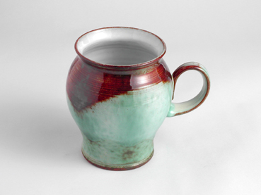
60.Tasse - vasenfoermig
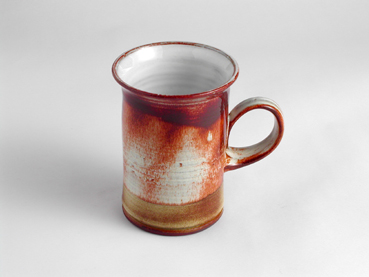
60.Tasse - gerade und duenn
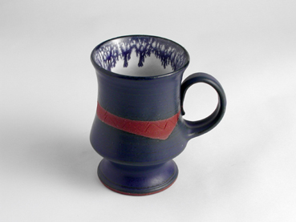
60.Tasse - kelchfoermig und duenn
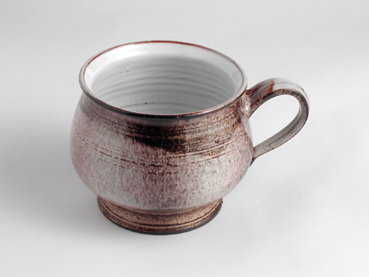
60.Tasse - kelchfoermig
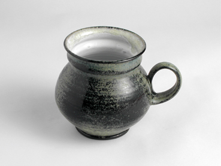
60.Tasse - doppelbauchfoermig
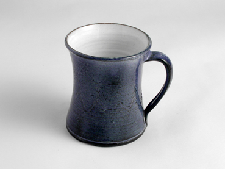
60.Tasse - gebogen
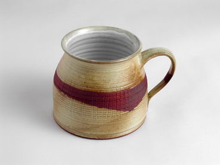
60.Tasse - krugfoermig
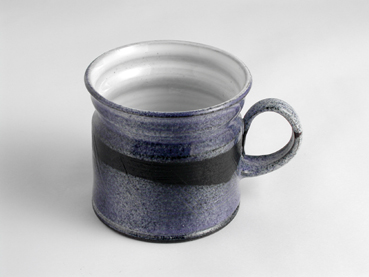
60.Tasse - gerade und breit
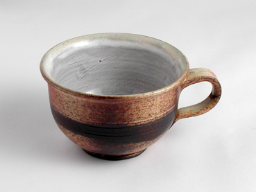
60.Tasse - offen
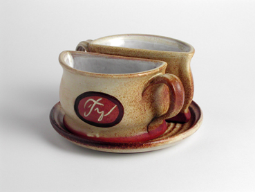
54.Doppeltasse mit Untersetzer - gegossen
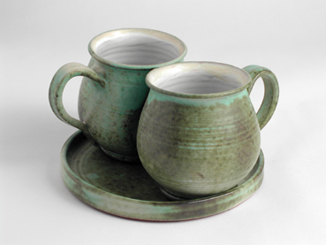
55.Doppeltasse mit Untersetzer - gedreht
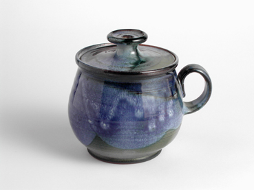
66.Tasse mit Deckel (fuer alleinige Seelen) - bauchfoermig
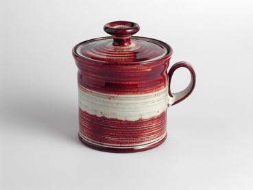
66.Tasse mit Deckel (fuer alleinige Seelen) - gerade
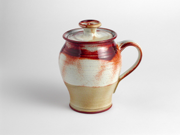
66.Tasse mit Deckel (fuer alleinige Seelen)

61.Tasse fuer baertige Maenner
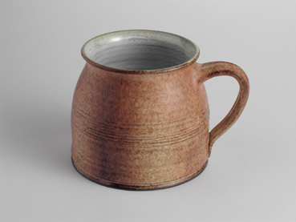
64.Tasse halber Liter
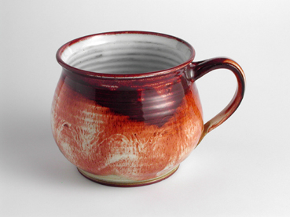
64.Tasse halber Liter - bauchfoermig
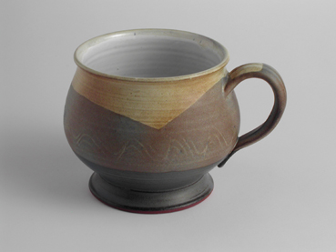
64.Tasse halber Liter - kelchfoermig
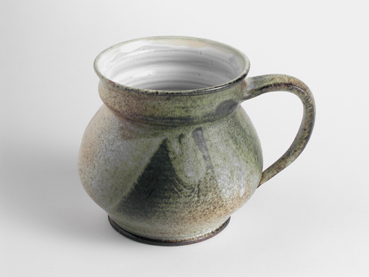
64.Tasse halber Liter - doppelbauchfoermig
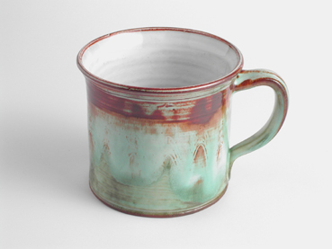
64.Tasse halber Liter - gerade

64.Tasse halber Liter - offen
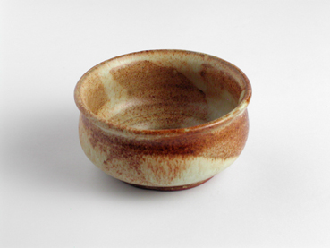
121.Teeschale
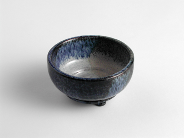
122.Teeschale - klein
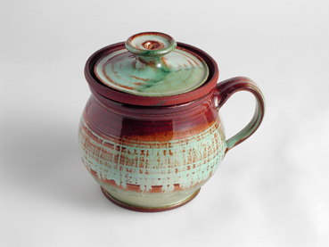
52.Krautertasse
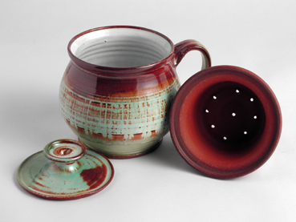
52.Krautertasse
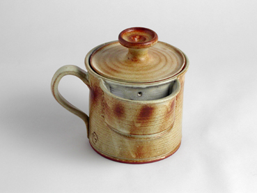
53.Krautertasse mit Taeschchen 53.Krautertasse mit Taeschchen
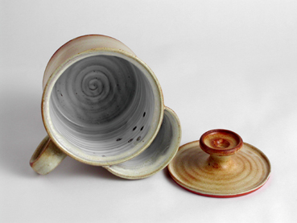
Tassen
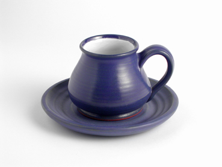
75.Tasse mit Untersetzer - piccolo
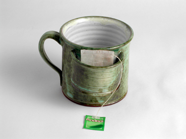
63.Tasse mit Taeschchen (fuers Teeportionieren)
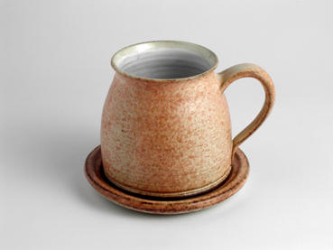
73.Tasse mit Untersetzer - Faesschen
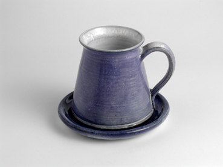
72.Tasse mit Untersetzer - konisch
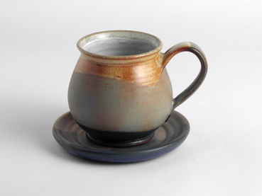
67.Tasse mit Untersetzer - bauchfoermig
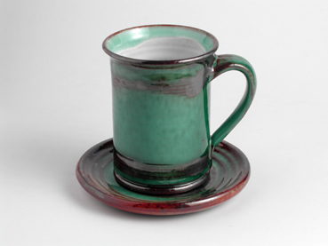
70.Tasse mit Untersetzer - gerade
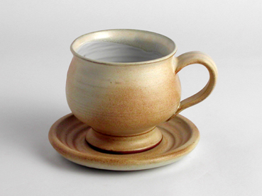
71.Tasse mit Untersetzer - Becher
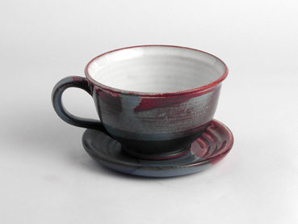
69.Tasse mit Untersetzer - offen
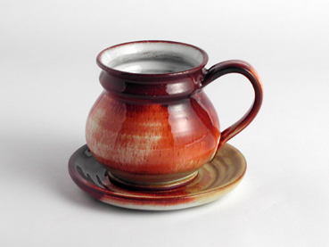
68.Tasse mit Untersetzer - doppelbauchfoermig
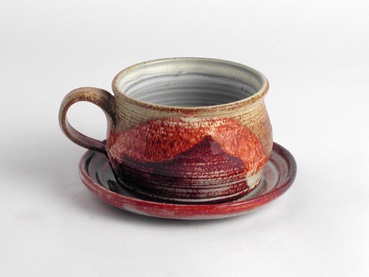
74.Tasse mit Untersetzer - Floesschen
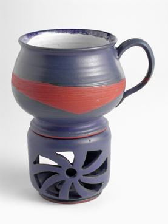
247.Halberliter Topf mit Erwaermer - kelchfoermig

000
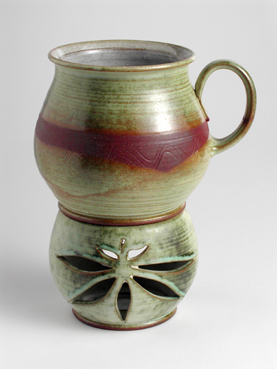
247.Halberliter Topf mit Erwaermer - bauchfoermig
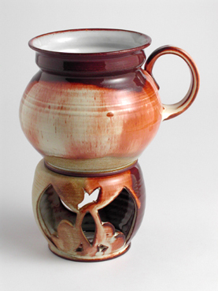
247.Halberliter Topf mit Erwaermer - doppelbauchfoermig
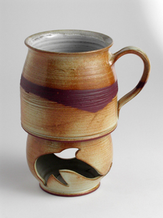
247.Halberliter Topf mit Erwaermer
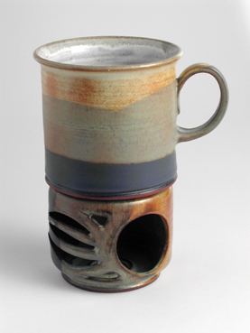
247.Halberliter Topf mit Erwaermer - gerade
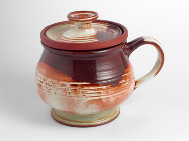
246.Krautertopf 0.5 l kelchfoermig
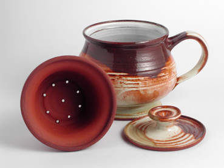
246.Krautertopf 0.5 l kelchfoermig
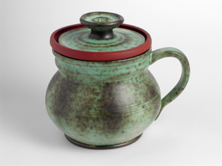
246.Krautertopf 0.5 l doppelbauchfoermig
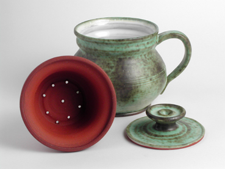
246.Krautertopf 0.5 l doppelbauchfoermig
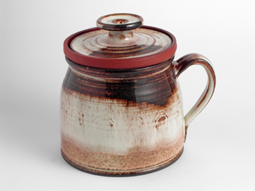
246.Krautertopf 0.5 l krugfoermig
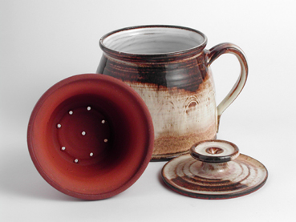
246.Krautertopf 0.5 l krugfoermig
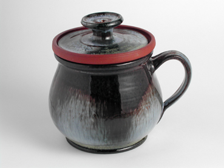
246.Krautertopf 0.5 l bauchfoermig
246.Krautertopf 0.5 l bauchfoermig

256.Sonnen tasse
256.Sonnen tasse
57.Tasse mit plastischem Motiv - krugfoermig
57.Tasse mit plastischem Motiv - bauchfoermig
57.Tasse mit plastischem Motiv - kelchfoermig
57.Tasse mit plastischem Motiv - konisch
57.Tasse mit plastischem Motiv - doppelbauchfoermig
58.Tasse mit kindlichem Motiv - krugfoermig
58.Tasse mit kindlichem Motiv - konisch
58.Tasse mit kindlichem Motiv - doppelbauchfoermig
58.Tasse mit kindlichem Motiv - gerade
58.Tasse mit kindlichem Motiv - bauchfoermig
56.Tasse mit Beschriftung - bauchfoermig
56.Tasse mit Beschriftung - gerade
59.Tasse mit Beschriftung - klein - bauchfoermig
59.Tasse mit Beschriftung - klein - gerade